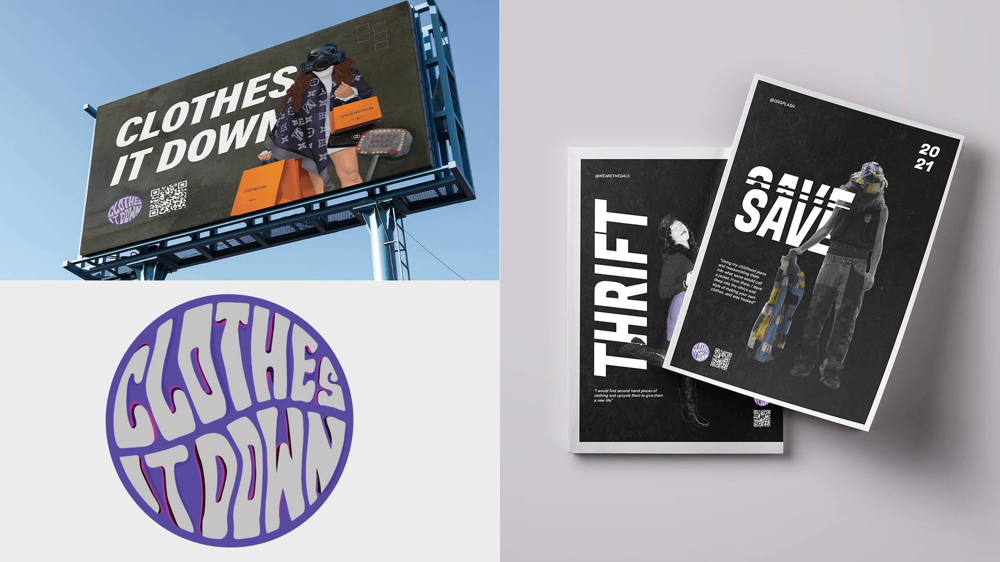

Monique Gooch
- Bachelor of Design
- Major in Communication
biography
Hello! I am Monique and I will soon graduate with a Bachelor of Design, majoring in communication design. I have been passionate about design ever since, and the University of Waikato was the perfect place to strive for my dreams. My passion for design is what led me to study at Waikato and from this I have grown as a person and as a designer.
My love for art is what first got me into design. Initially, I was going to study to become a nurse, however when I learnt more about the field of design, I thought, why not study something I’m actually passionate about? Studying design at Waikato has led me to be more creative and view the world differently through a designer’s lens. Over the 3 year course of my study, I have learned a range of design skills which have helped me discover and develop my specialisation in publication and branding. I can’t wait to see what the future holds, as I extend my knowledge and skills in graphic design.
project description
For the capstone project two other classmates and I formed a group to design and produce a campaign which advocates against fast fashion. Fast fashion is the term used to describe clothes which are produced and distributed at high speeds and in large volumes, resulting in cheap and affordable items. The ideal “cheapness” of fast fashion comes with a high price, with fast fashion being one of the leading contributors to pollution of the planet. The fast turnover of fashion trends means more clothing is produced and distributed and then wasted when trends change again. As a group we decided this is a problem we would like to tackle. We decided to design a campaign which not only informs people of the negative impacts fast fashion has on the environment and workers, but also educates them about ways in which they can conform to sustainable fashion.
As one of the graphic designers, I was tasked with creating a 3-part poster series, as well as teaming up with Rayven to create a fashion magazine. The poster series demonstrates the dark and dreadful reality of fast fashion that not many of us are aware of. The visuals of each poster is meant to make the viewer uncomfortable and be hit by the realisation that fast fashion is having such a damaging effect on our society. Each poster is meant to serve as a purpose to encourage viewers to start living more sustainably, to make smarter choices and to support our campaign “Clothes It Down”.
Rayven, our other graphic designer, was tasked with creating scalable graphics suitable to fit billboards. She also worked alongside Monique in creating our campaigns magazine. The billboards emphasize on illustrations taken from the poster series. Due to the environment billboards are often placed these graphics are made to be readable within a short period of time. Creating content that is big and bold gravitating viewers at first glance. As for the magazine this print deliverable specifically brings together all campaign content into one. With this we aim to inform readers on the intensive research we have carried out throughout the project.
Kaleesha, our Media Designer, was tasked with creating the documentary for our campaign. The documentary includes Taniesha Parker, Zara Gilbert & Luca García Ferrari talking about their knowledge of fast fashion and their beliefs when it comes to avoiding the industry. Along with the informative interviews, they talk about ways in which they know people can avoid the fast fashion industry, including op shopping, making and/ or revamping old clothing. The purpose of the documentary is to support the rest of our campaign and provide further understanding of the fast fashion industry.
Clothes It Down

For more information contact us
Email: degreeshow@waikato.ac.nz
Faculty phone: 0800 924 528
Faculty information: cs.waikato.ac.nz